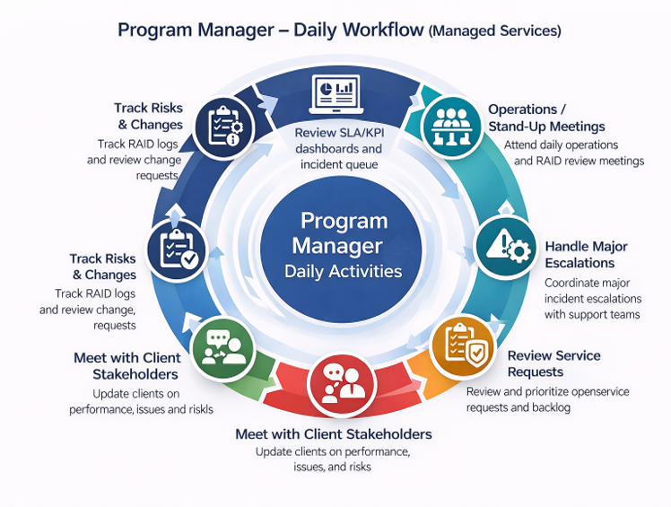

Selected Transformation Program
Managed Service Provider (MSP)
🖥️ Domain: Managed Services / IT Operations
💼 Role: Program Manager – Managed Services
🎯 Focus: ITSM, ITOM, Service Operations & Infrastructure Management
📋 Framework: ITIL-aligned Service Management
Business Challenge
The organization required a structured Managed Service Provider
operating model to manage enterprise infrastructure, applications,
networks, security and IT operations while maintaining service
availability and agreed Service Level Agreements (SLAs).
The MSP program established an integrated service-management
framework covering network monitoring, backup and disaster
recovery, patch management, security monitoring and infrastructure
performance management. The operating model connected ITSM
processes with IT Operations Management (ITOM), service governance,
automation and continual improvement.
MSP Service Scope
- Network Monitoring & Management: Monitor network availability, connectivity, latency, capacity, device health and critical network events.
- Data Backup & Disaster Recovery: Manage backup policies, backup monitoring, restore validation, recovery readiness and disaster recovery exercises.
- System Updates & Patch Management: Plan, test, schedule and deploy operating-system and application patches while managing business and operational risk.
- Security Monitoring & Management: Monitor security events, vulnerabilities, endpoint controls, access-related risks and security incidents.
- Infrastructure Performance Monitoring: Monitor compute, storage, database, application and infrastructure performance, capacity and availability.
MSP Service Management Objectives
- Maintain agreed service availability and SLA performance.
- Improve incident detection and resolution.
- Establish proactive infrastructure monitoring.
- Improve backup reliability and disaster recovery readiness.
- Reduce operational risk through controlled patch management.
- Strengthen security monitoring and response coordination.
- Improve capacity, performance and infrastructure visibility.
- Establish standardized ITSM and ITOM processes.
- Drive automation and continual service improvement.
MSP Operating Model
The MSP operating model integrates service management, IT operations,
infrastructure monitoring, security, backup and disaster recovery,
governance and continual improvement into a single service delivery
framework.

MSP Program Manager – Service Management & IT Operations Model
ITIL Service Management Lifecycle
The service-management operating model follows ITIL-aligned practices
to manage services from strategy and design through transition,
operation and continual improvement.
01 — Service Strategy & Planning
- Define service portfolio, business outcomes and service-management objectives.
- Establish SLAs, OLAs, service KPIs and governance requirements.
- Define service scope, operating model and resource requirements.
- Identify operational, security and continuity risks.
02 — Service Design
- Define service architecture and operational processes.
- Establish monitoring, alerting and escalation requirements.
- Define backup, recovery, security and availability controls.
- Establish service-level measurement and reporting.
03 — Service Transition
- Transition new or changed services into managed operations.
- Validate infrastructure, application and operational readiness.
- Establish knowledge transfer and support documentation.
- Conduct release, deployment and change readiness reviews.
04 — Service Operation
- Monitor infrastructure and service availability.
- Manage incidents, service requests and operational events.
- Execute backup, patching, monitoring and security operations.
- Coordinate incident escalation and resolution.
- Maintain SLA and operational performance.
05 — Continual Improvement
- Analyze service performance and recurring incidents.
- Identify automation and process-improvement opportunities.
- Improve service quality, reliability and operational efficiency.
- Track improvement initiatives through measurable outcomes.
- Feed lessons learned into service-management processes.
ITSM Lifecycle
- Request Management: Manage standard service requests through defined workflows, approvals and fulfillment.
- Incident Management: Restore normal service as quickly as practical and minimize business impact.
- Major Incident Management: Coordinate high-impact incidents through structured escalation, communication and recovery.
- Problem Management: Identify root causes of recurring incidents and implement corrective actions.
- Change Management: Assess, approve, schedule and control infrastructure and application changes.
- Release Management: Coordinate planned releases and deployments into managed environments.
- Configuration Management: Maintain configuration information and relationships for managed infrastructure and services.
- Knowledge Management: Maintain operational knowledge, runbooks, known errors and support documentation.
- Service Level Management: Track SLAs, OLAs, service performance and customer commitments.
ITOM Lifecycle
IT Operations Management (ITOM) provides the operational visibility
and control layer for infrastructure and technology services.
01 — Discover & Monitor
- Discover infrastructure and technology assets.
- Monitor servers, network devices, databases and applications.
- Establish event and performance monitoring.
02 — Event Management
- Collect and correlate infrastructure and application events.
- Identify actionable alerts and operational anomalies.
- Reduce alert noise through event correlation and automation.
03 — Incident & Response
- Convert actionable events into incidents where appropriate.
- Route incidents to appropriate support teams.
- Coordinate response, escalation and service restoration.
04 — Performance & Capacity
- Monitor utilization, performance and capacity trends.
- Identify potential performance degradation.
- Plan capacity improvements and infrastructure optimization.
05 — Automation & Orchestration
- Automate repeatable operational activities.
- Automate health checks, remediation and standard procedures where appropriate.
- Improve operational consistency and reduce manual effort.
06 — Optimize & Improve
- Analyze operational trends and service performance.
- Identify infrastructure optimization opportunities.
- Continuously improve reliability, availability and efficiency.
Key MSP Service Processes
Network Monitoring & Management
- Network availability and device health monitoring.
- Capacity, latency and performance monitoring.
- Network event correlation and incident escalation.
- Planned maintenance and change coordination.
Backup & Disaster Recovery
- Define backup schedules and retention policies.
- Monitor backup success and exceptions.
- Conduct restore validation.
- Maintain recovery procedures and runbooks.
- Coordinate disaster recovery exercises and readiness reviews.
Patch Management
- Identify required operating-system and application patches.
- Assess security and operational impact.
- Coordinate testing and deployment windows.
- Manage exceptions and remediation plans.
- Validate post-patch health and service availability.
Security Monitoring & Management
- Monitor security events and infrastructure alerts.
- Coordinate vulnerability remediation.
- Manage security-related incidents and escalation.
- Coordinate access and security-control reviews.
- Track security risks and remediation activities.
Infrastructure Performance Monitoring
- Monitor CPU, memory, storage, database and application performance.
- Establish performance thresholds and alerts.
- Analyze trends and capacity requirements.
- Coordinate performance remediation.
- Identify opportunities for infrastructure optimization.
Program Manager – Roles & Responsibilities
- Service Governance: Establish MSP governance model, operating cadence, escalation framework and service review structure.
- Service Delivery: Oversee delivery of network, infrastructure, backup, security, patching and monitoring services.
- SLA / KPI Management: Track service performance, SLA adherence, operational KPIs and customer commitments.
- Stakeholder Management: Manage customer, business, technology, security and vendor stakeholders.
- Incident Governance: Oversee major incidents, escalations, communications and service restoration.
- Problem & Improvement Management: Drive root-cause analysis, corrective actions and continual service improvement.
- Change & Release Governance: Ensure changes and releases follow approved governance, risk assessment and deployment procedures.
- Risk Management: Manage operational, security, availability, capacity and continuity risks.
- Resource Management: Plan teams, skills, shifts, coverage and operational capacity.
- Financial Management: Track service costs, resource utilization, vendor costs and financial performance.
- Vendor Management: Coordinate third-party providers, technology vendors and service partners.
- Continual Improvement: Identify automation, process optimization and service enhancement opportunities.
MSP Governance & Reporting
- Daily operational reviews for incidents, events and service health.
- Weekly service reviews covering SLA, incidents, changes, risks and capacity.
- Monthly service review covering KPI trends, service quality, financials and improvement initiatives.
- Quarterly executive governance covering service performance, roadmap, risks and strategic improvements.
Key Service Management Metrics
- SLA compliance and service availability.
- Mean Time to Detect (MTTD).
- Mean Time to Restore / Resolve (MTTR).
- Incident volume and repeat incidents.
- Change success and change-related incidents.
- Patch compliance.
- Backup success and restore success.
- Disaster recovery readiness.
- Infrastructure capacity and performance trends.
- Security incident and vulnerability remediation status.
- Customer satisfaction and service improvement progress.
Technology & Operations Landscape
- ITSM Platform
- ITOM / Discovery / CMDB
- Event & Infrastructure Monitoring
- Network Monitoring
- Backup & Disaster Recovery Platforms
- Patch & Configuration Management
- Security Monitoring / SIEM
- Cloud & Data Center Infrastructure
- Application & Database Monitoring
- Automation & Orchestration
MSP Transformation Outcome
Established an integrated Managed Service Provider operating
model connecting ITSM, ITOM and infrastructure operations
across network monitoring, backup and disaster recovery,
patch management, security monitoring and infrastructure
performance management, supported by structured governance,
SLA management and continual service improvement.
Program Management Takeaway:
Effective MSP delivery requires more than monitoring infrastructure.
The Program Manager connects service strategy, ITIL-aligned processes,
ITSM workflows, ITOM operations, people, technology, vendors and
governance to deliver reliable and measurable business services.